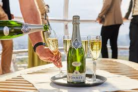
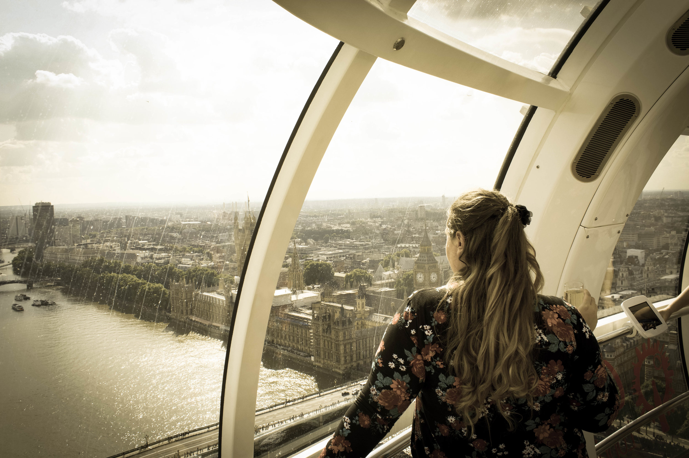

Welcome to London Travel Guide Page Two!
- More Benefits of coming to London
Click on the Images ↓ below to see more Information

click here


Great Places to Stay
- Luxury: The Ritz, The Savoy, The Shard.
- Mid-Range: The Z Hotel, CitizenM, Premier Inn.
- Budget-Range: YHA London, Generator Hostel, EasyHotel
Great Tips To Know
- Use an Oyster Card for cheaper public transport.
- Stand on the right when using escalators.
- Check the weather and pack accordingly.
- Book attractions in advance to avoid long queues.
Enjoy your trip to London! Whether you’re exploring historic sites,
indulging in British cuisine,
or taking in the city’s vibrant culture,
there’s always something new to discover.